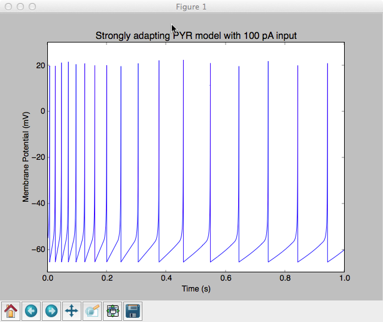
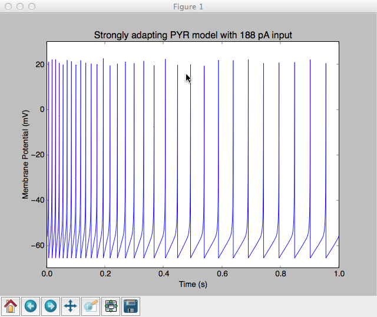
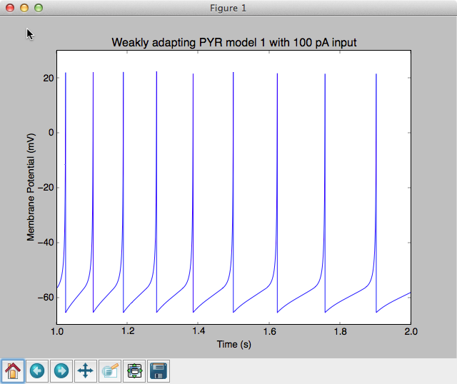

This is the readme for the models associated with the paper: Ferguson KA, Huh CY, Amilhon B, Williams S, Skinner FK (2014) Simple, biologically-constrained CA1 pyramidal cell models using an intact, whole hippocampus context. F1000Res 3:104 This archive was contributed by F. Skinner. This python code contains weakly and strongly adapting cases and requires the brian package. You can run the models by cd'ing to the folder containing them and running python strongly_adapting_PYR_model.py In 15 seconds or so you should see an image like:  Changing the mean_Iapp from 100 to 188 on line 22 we obtain an image similar to Fig. 3A bottom in the paper:  The weakly adapting case: python weakly_adapting_PYR_model.py with its default input of 100 pA will generate an image like: 